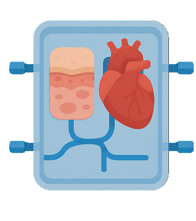

Intro
I am a Novo Nordisk Postdoctoral Research Fellow in the Professor Dame Molly Stevens' Group at the University of Oxford.
My research lies at the intersection of biomaterials, microfluidics, and machine learning, where I develop next-generation microphysiological systems for disease modeling and drug screening.
Selected Awards & Honors
- University of Toronto Monetary Prize for Distinguished Dissertation Award - 2025
- Chinese Government Award for Outstanding Self-Financed Students Abroad - 2024
- Hong Kong SAR Government Scholarship - 2017, 2018
Experiences
-
University of Oxford
Novo Nordisk Postdoctoral Research Fellow
Nov 2024 - Present
Project: Engineering human cardiac organoids at scale to accelerate in vitro cardiovascular research
Advisor: Prof. Dame Molly M. Stevens, Prof. Paul Riley
-

University of Toronto
Ph.D. in Polymers and Materials Chemistry
Sept 2019 - Sept 2024
Dissertation: Development of In-vitro Skin Models for Screening Biologically Active Compounds and Modelling Diseases
Advisor: Prof. Eugenia Kumacheva
-

The Hong Kong Polytechnic University
B.Sc. in Biomedical Engineering (First Class Honours)
Sept 2015 - Jul 2019
Dissertation: Establishment of An Integrated and Multifunctional Senescence Chip
Advisor: Prof. Chunyi Wen
-
University of Pennsylvania
Academic Exchange
Sept 2018 - Dec 2018
Project: Engineering granular hydrogels for biomedical applications
Advisor: Prof. Jason A. Burdick
-
National University of Singapore
Research Internship
May 2018 - Aug 2018
Project: Developing spiral microfluidics for label-free cell sorting
Advisor: Prof. Chwee Teck Lim
Research Directions
Biomimetic Materials
Design the next-generation biomaterials with programmable mechanical, chemical, and biological properties to recapitulate native tissue microenvironments.
In particular, we are intested in:
- Fibrous hydrogel mimicking extracellular matrix architectures
- Dynamic hydrogels with spatiotemporal control of complex mechanical properties
- 3D-printable materials for tissue culture and regenerative medicine
Representative Works:
- Decoupling hydrogel structure and mechanics in Advanced Materials 2024, 36 (2), 2305964.
- Recapitulating tissue fibrosis in Biomacromolecules 2020, 22(6), 2352-2362.
- Investigating hydrogel non-linear elasticity in PNSA 2023, 120(51), e2220755120.

Microphysiological Systems
Redefining preclinical research with microphysiological systems that emulate human biology through microfluidics, organoids, and advanced materials.
This vision will be realized through:
- Developing high-throughput screening platforms for drug discovery
- Recapitulating complex 3D tissue architectures in vitro
- Investigating inter-organ interaction towards human body-on-a-chip
Representative Works:
- Multilayered skin organoids in Science Advances 2025, 11(19), eadu1251.
- Dermal spheroid array in Lab on a Chip 2021, 21, 3952-3962.
- Multi-organ interaction in Aggregate 2023, e478.
Machine Learning-Guided Experimentation
A paradigm shift in experimentation from trial-and-error to data-driven discovery with advanced machine learning algorithmn
- Closed-loop optimization of biomaterial formulations and therapeutic strategies
- Data mining to accelerate material design for clinical applications
- Multiparametric analysis of high-content screening data for deeper biological insights
Representative Works:
- Biomimetic scaffolds for in vitro disease modeling Manuscript submitted
- Material design for targeted arthritis therapy Manuscript in preparation
- Discovery of anti-fibrotic therapies Project in progress
Teaching & Mentorship
Courses Taught
-
CHM135 Chemistry: Physical Principles
Tutorial Instructor
-
CHM135 Chemistry: Physical Principles
Lecture Moderator
-
CHM135 Chemistry: Physical Principles
Laboratory Demonstrator
-
CHM136 Introductory Organic Chemistry
Laboratory Demonstrator
-
CHM247 Introductory Organic Chemistry II
Laboratory Demonstrator
-
CHM249 Organic Chemistry
Laboratory Demonstrator
Student Mentorship
University of Oxford
-
Y. S. (Ph.D.)
Developing 3D printable tissue-mimetic hydrogels with pixel-resolution
-
Y. Z. (Ph.D.)
Engineering human brain development in vitro
University of Toronto
-
Z. M. (Ph.D.)
Controlling Viscoelastic Properties of Synthetic Fibrillar Hydrogel for Tissue Engineering
-
B. Z. (M.Sc.)
Controlling Mechanical Properties and Bio-printability of Synthetic Fibrillar Hydrogels
-
V. T. (B.Sc.)
Screening Hydrophobic Active Ingredients on a Dermal Spheroid-on-a-Chip Platform
Chemistry Best Summer Research Award
-
F.R. (Research Assistant)
Safety Evaluation of Chemical Agents in a Microfluidic Spheroid Platform
Publications
First/Corresponding Author
*indicates equal contribution #indicates co-corresponding author
- Chen, Z., Kalhori, D., Rakhshani, F., Andre, V., Deisenroth, T., Kumacheva, E. Multilayered skin organoids for in vitro screening and disease modeling. Science Advances, 2025, 11(19), eadu1251.
- Liu, K.,* Fang, X.,* Aazmi, A.,* Wang, Q.,* Gong, X.,* Chen, Z.,* Qin, M.,* Pu, C.,* Zhao, Y.,* Qiu, X., Wang, P., Yang, J., Zhang, Y., Yuan, H., Ma, L., Zhao, B., Wen, C., Mihaila, S., Wu, Y., Hou, H., Liu, C., Ruan, C. Organoids: Principle, Application and Perspective. The Innovation Life, 2024, 2 (3), 100088-1-100088-30.
- Chen, Z., Sugimura, R., Zhang, Y.S., Ruan, C., Wen, C. Organoids in concert: engineering in vitro models towards enhanced fidelity. Aggregate, 2023, e478.
- Chen, Z., Ezzo, M., Zondag, B., Rakhshani, F., Ma, Y., Hinz, B., Kumacheva, E. Intrafibrillar Crosslinking Enables Decoupling of Mechanical Properties and Structure of a Composite Fibrous Hydrogel. Advanced Materials, 2024, 36 (2), 2305964.
- Chen, Z.,* Khuu, N.,* Xu, F., Kheiri, S., Yakavets, I., Rakhshani, F., Morozova, S., Kumacheva, E. Printing Structurally Anisotropic Biocompatible Fibrillar Hydrogel for Guided Cell Alignment. Gels, 2022, 8, 685.
- Chen, Z.,* Kheiri, S.,* Young, E., Kumacheva, E. Trends in Droplet Microfluidics: from Droplet Generation to Biomedical Applications. Langmuir, 2022, 38(20), 6233–6248.
- Zou Z., Luo X., Chen, Z.#, Zhang Y.S.#, Wen C.# Emerging microfluidics-enabled platforms for osteoarthritis management: from benchtop to bedside. Theranostics, 2022, 12(2):891-909.
- Chen, Z., Kheiri, S., Gevorkian, A., Young, E., Andre, V., Deisenroth, T., Kumacheva, E. Microfluidic arrays of dermal spheroids: a screening platform for active ingredients of skincare products. Lab on a Chip, 2021, 21, 3952-3962.
- Prince, E.,* Chen, Z.,* Khuu, N., Kumacheva, E. Nanofibrillar hydrogel for modeling fibrosis of the extracellular matrix. Biomacromolecules, 2020, 22(6), 2352-2362. (Journal cover)
- Chen, Z., Jiang, K., Zou, Z., Luo, X., Lim, C.T., Wen, C. High-throughput and label-free isolation of senescent murine mesenchymal stem cells. Biomicrofluidics, 2020, 14(3), 034106. (Featured article; Reported by Scilight)
- Chen, Z., Luo, X., Zhao, X., Yang, M., Wen, C. Label-free cell sorting strategies via biophysical and biochemical gradients. Journal of Orthopaedic Translation, 2019, 17, 55.
Collaborative Works
- Ma, Y., Nouri, S., Pham, D.A., Ziyaeyan, A., Chen, Z., Morozova, S., et al. Phytoglycogen Nanoconjugates as Joint Lubricant with Enhanced Retention. Advanced Functional Materials, 2024, 2413525.
- Yakavets, I., Ayachit, M., Kheiri, S., Chen, Z., Rakhshani, F., et al. A Microfluidic Platform for Evaluating the Internalization of Liposome Drug Carriers in Tumor Spheroids. ACS Applied Materials & Interfaces, 2024, 16(8), 9690–9701.
- Prince, E., Morozova, S., Chen, Z., Adibnia, V., Yakavets, I., et al. Nanocolloidal hydrogel mimics the structure and nonlinear mechanical properties of biological fibrous networks. PNAS, 2023, 120(51), e2220755120.
- Kheiri, S., Chen, Z., Yakavets, I., Rakhshani, F., Young, E., Kumacheva, E. Integrating spheroid-on-a-chip with a rocker platform: a high-throughput biological screening platform. Biotechnology Journal, 2023, e2200621.
- Li, Y., Khuu, N., Zhang, N., Prince, E., Tao, H., Chen, Z., et al. Matrix Stiffness Regulates Response of Breast Tumor Spheroids to Chemotherapy Treatment. Biomacromolecules, 2020, 22(2), 419-429. (Journal cover)
- Yu, L., Shi, C., Xi, W., Yeo, J.C., Soon, R.H.,Chen, Z., et al. Streaming Current Based Microtubular Enzymatic Sensor for Self‐Powered Detection of Urea. Advanced Materials Technologies, 2019, 4(1), 1800430.